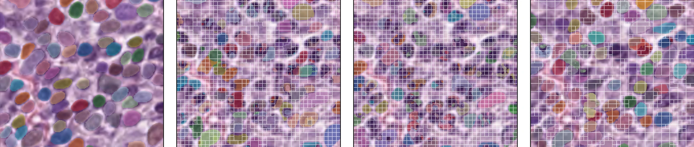
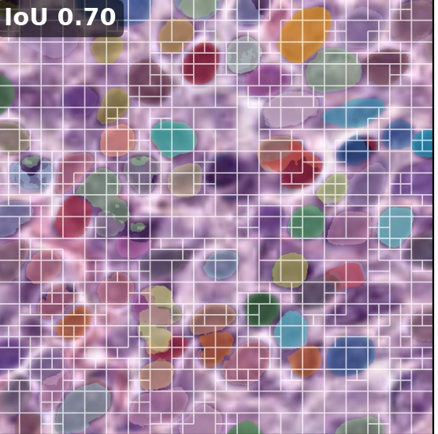
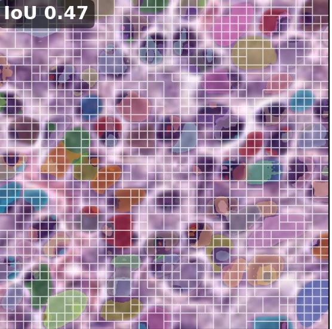
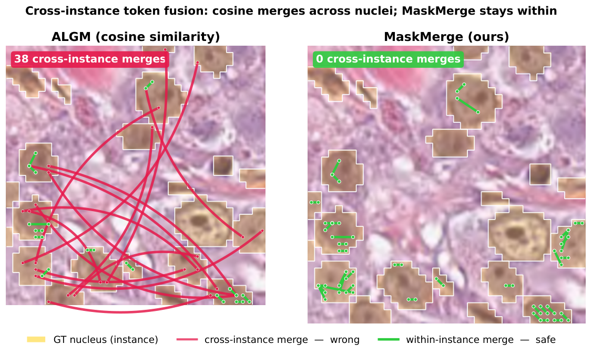
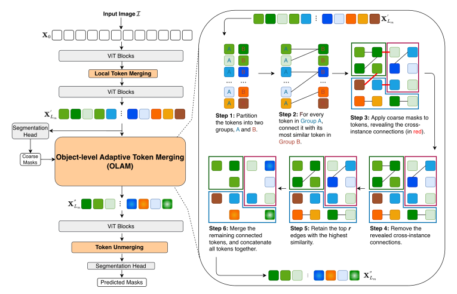
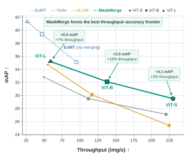

- 5.7×
- Fewer cross-instance merges on PanNuke
- +3.1 mAP
- Accuracy gain over ALGM on iSAID
- 1.23×
- iSAID throughput relative to ALGM
Qualitative results
Explore the predictions
Compare segmentation masks and token boundaries on the same validation image.


Motivation
Similar tokens can belong to different objects
Appearance-based merging can erase the distinction between adjacent nuclei, parked vehicles, or other objects that look alike. MaskMerge uses the segmentation model's own intermediate masks to keep global merges within predicted instances.
In the matched-budget comparison, MaskMerge reduced cross-instance merges by 5.7× on PanNuke and 2.9× on iSAID relative to ALGM.
Read the motivation in the paper


Architecture
How MaskMerge works
The model merges tokens in two stages, processes the reduced sequence, and reconstructs the spatial grid for mask readout.


Local merging
Pool similar patch tokens in non-overlapping windows after the first encoder block.
Object-level adaptive merging
Predict coarse masks and use them to limit global cosine matches to tokens assigned to the same instance. Average matched tokens with weights based on their represented patch counts.
Spatial reconstruction
Keep later transformer blocks on the reduced sequence and gather tokens back into the original grid for mask prediction.
Quantitative results
Accuracy and efficiency
MaskMerge improves the trade-off across ViT scales on PanNuke, improves accuracy and throughput on iSAID, and matches ALGM's mAP with fewer FLOPs on Cityscapes.
| Method | mAP | Images/s | GFLOPs |
|---|---|---|---|
| Dense EoMT | 39.4 | 49.1 | 623 |
| ToMe | 29.5 | 114.0 | 369 |
| ALGM | 30.1 | 121.5 | 229 |
| MaskMerge | 32.1 | 142.8 | 153 |
EoMT with DINOv2, batch size 4, FP16 inference. Full benchmark in the paper
On PanNuke with ViT-B, MaskMerge gains 2.0 mAP over ALGM and uses 76 fewer GFLOPs per image.


MAE pretraining
On PanNuke with MAE ViT-B, MaskMerge reaches 34.0 mAP and 33.4 small-object AP, compared with 32.0 and 31.5 for ALGM.
MAE resultsMask2Former
On PanNuke with DINOv2 ViT-B, the single-pass MaskMerge extension reaches 32.53 mAP at 36.1 images/s. The ToMe comparison reaches 30.69 mAP at the same throughput.
Mask2Former resultsResources
Code & citation
Download model weights for EoMT and Mask2Former, or train MaskMerge using the paper's warm-start recipe.
Training guide@inproceedings{balaji2027maskmerge,
title = {MaskMerge: Structure-aware Token Merging for Efficient Instance Segmentation},
author = {Balaji, Bavesh and Jiang, Letian and Wong, Alexander and Clausi, David and Rambhatla, Sirisha},
booktitle = {IEEE/CVF Winter Conference on Applications of Computer Vision (WACV)},
year = {2027},
url = {https://arxiv.org/abs/2610.22921}
}